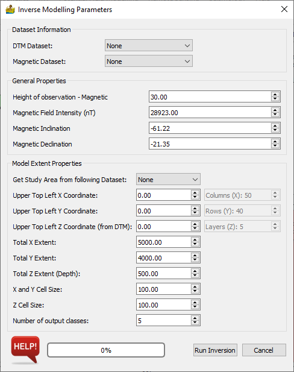

3D Magnetic Inversion¶
This dialog sets up the parameters for 3D magnetic inversion, which uses the SimPEG library. The Dataset Information section associates connected raster datasets with the either DTM or magnetic data. Data are output as a number of classes, in line with the lithology principle which PyGMI uses. The output from inversion can therefore be directly input into the modelling module.
The Model Extent Properties section sets up the model extents - by default from an associated DTM. Of importance are the X, Y and Z cell sizes. This determines the number of rows, columns and layers in the model. As a rule of thumb, models bigger than 100x100x100 may be slow, although this will depend on the hardware available.
Dataset Information¶
This is used to define the data connected to the modelling module. The data is either connected manually or will be embedded withing a 3D model file.
DTM Dataset - This is a Digital Terrain Model or Digital Elevation Model (DEM) of your area of study.
Magnetic Dataset - This is the magnetic data to be modelled.
General Properties¶
These general properties are important for the inversion. If they are incorrect, or if there is extensive remanence in the are, the inversion results may be poor.
Height of observation - Magnetic - This is the magnetic sensor height.
Magnetic Field Intensity - This is the intensity of the magnetic field at the time of the survey. You can get this from NOAA.
Magnetic Inclination - This is the inclination of the magnetic field at the time of the survey. You can get this from NOAA.
Magnetic Declination - This is the declination of the magnetic field at the time of the survey. You can get this from NOAA.
Model Extent Properties¶
The model extents control the area size and depth of your model, as well as its resolution. Typically one of your datasets are used to fill in most of the fields automatically. Because the DTM is compulsory to the modelling, this is normally the default choice.
Get Study Area from following Dataset - Usually the DTM dataset is chosen, but it can be any of your datasets.
Upper Top Left X Coordinate - This is the north-west corner X coordinate of your model in meters.
Upper Top Left Y Coordinate - This is the north-west corner Y coordinate of your model in meters.
Upper Top Left Z Coordinate - This is the north-west corner Z coordinate of your model in meters above sea level.
Total X Extent - the distance from east to west in the model.
Total Y Extent - the distance from north to south in the model.
Total Z Extent - the depth range of the model.
X and Y Cell Size - the width of each model cube in the x and y direction.
Z Cell Size - the height of each model cube in z direction.
Number of output classes.
Number of Columns (X Direction) - This is calculated automatically from extents and cell sizes.
Number of Rows (Y Direction) - This is calculated automatically from extents and cell sizes.
Number of Layers (Z Direction) - This is calculated automatically from extents and cell sizes.
Tips¶
Start with a low resolution model to get a general model in place first. 20x20x20 should be fine, since any bigger will get slow to model.
Once your low resolution model is complete, you can increase the model’s resolution to a better resolution. Please note that bigger than 100x100x100 will cause calculations to become very slow (unless you have lots of memory).

References¶
Cockett, Rowan, Seogi Kang, Lindsey J. Heagy, Adam Pidlisecky, and Douglas W. Oldenburg. “SimPEG: An Open Source Framework for Simulation and Gradient Based Parameter Estimation in Geophysical Applications” Computers & Geosciences, September 2015. doi:10.1016/j.cageo.2015.09.015.
Lindsey J. Heagy, Rowan Cockett, Seogi Kang, Gudni K. Rosenkjaer, Douglas W. Oldenburg. “A framework for simulation and inversion in electromagnetics” Computers & Geosciences, September 2017. doi:10.1016/j.cageo.2017.06.018